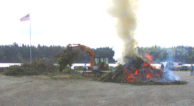

2003 BEACH BURN
Dick Mowry feeding the fire
Tons of branches and vegetation from along the roads and on private lots were disposed of at the May 17th annual North Beach fire. Special thanks to Dick Mowry for unloading vehicles and loading the fire with his power shovel. Thanks to Al Moren, Nick Huff, Dallas Amidon, Ken Freeman, Tracy & Nick Anspach, Bill & Claudia Jones, Ippon Mowry, Tim Jones, Jack Wells, Andy Thompson, Leon Hill, Kathy Deuster, Dana Gruber, Kerry Denny, Erik Johnson, Phillip Foster, John Farris, Casey Jones, and Mike Shettlesworth for gathering and transporting material. Thanks also to Boosters Linda Moren, Mary Turpin, Barbara Huff, Vicki Huff, Carolyn Anspach, and Cindy Denny for providing lunch.
|